How to do a Medication History
Every home medication should have a dose, route, and frequency. Compliance to home medications should also be documented.
Table of Contents
Navigating to the Medication History
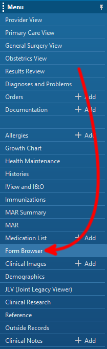
Navigate to the "Form Browser."
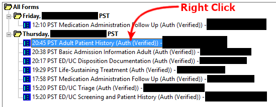
Right click on the "Adult Patient History" form.
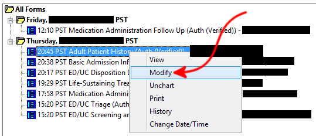
Select "Modify."
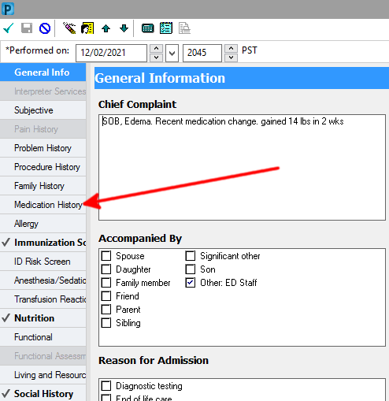
Select "Medication History"
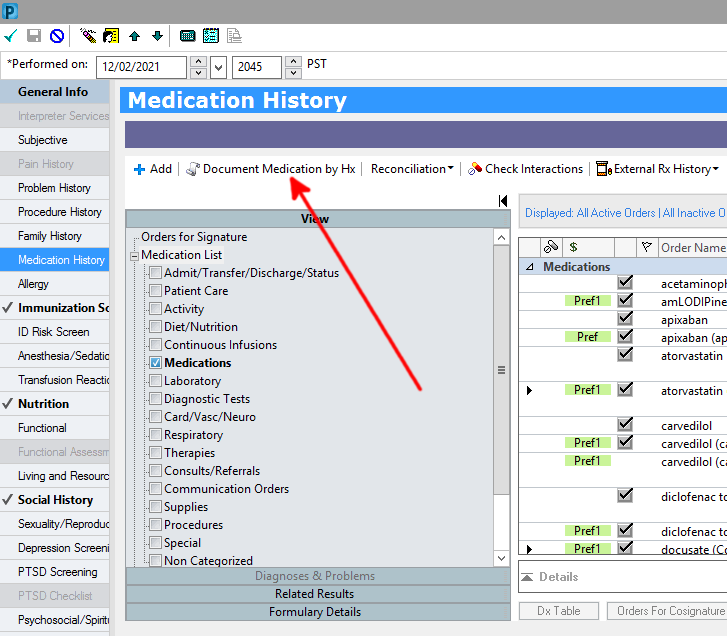
Click "Document Medication by Hx"
Adding New Medications
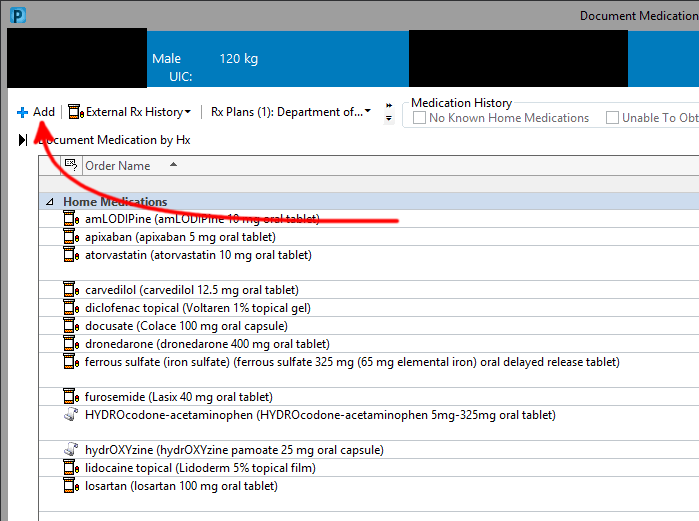
Click "Add"
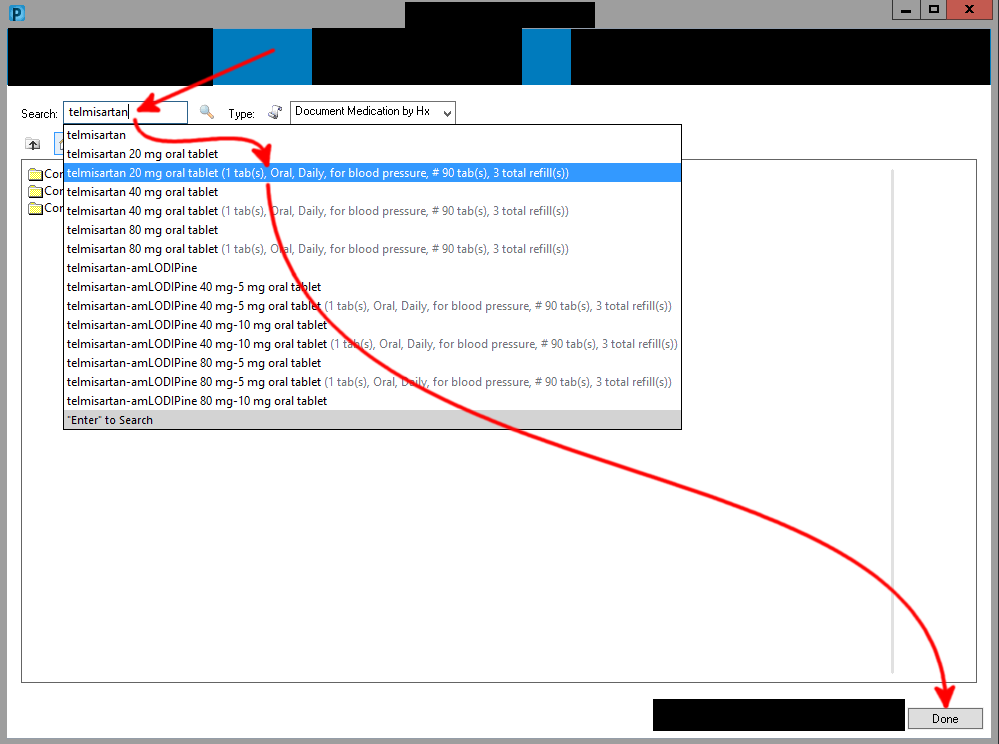
Enter the name of the medication into the searchbar and click the appropriate medication from the available options.
Add as many other medications as needed before clicking "Done."
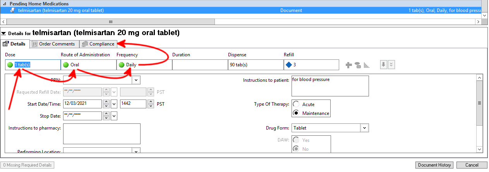
For each new medication, update the "Dose", "Route of Administration", and "Frequency."
Select the "Compliance" tab.
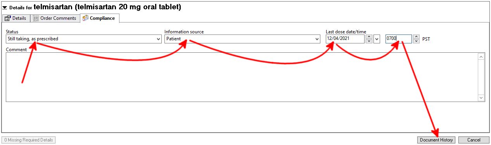
Edit the "Status", "Information Source", and "Last dose date/time" boxes.
When the details and compliance for each medication have been edited, click "Document History."
Edit An Existing Historical Medication
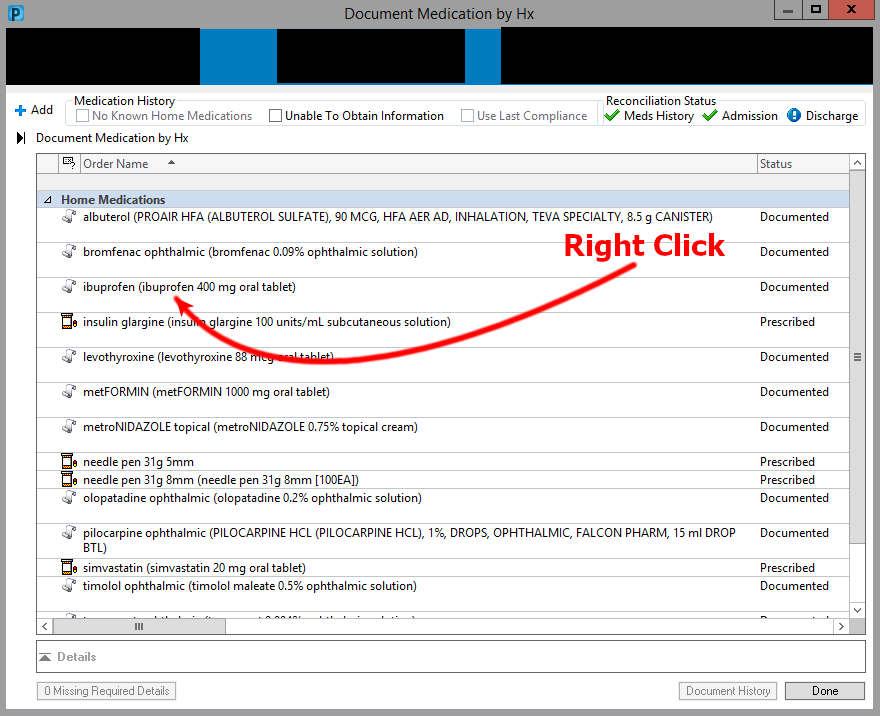
Right click on an existing medication.
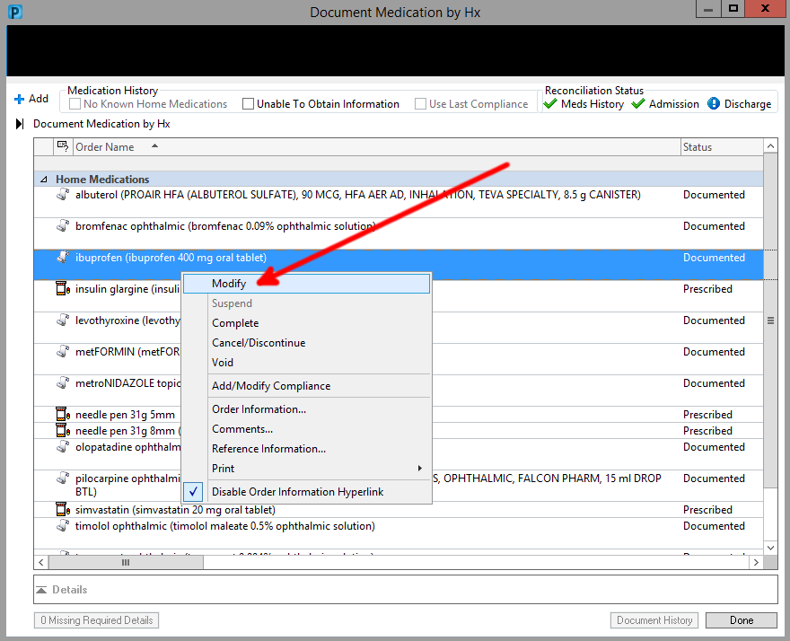
Select "Modify"
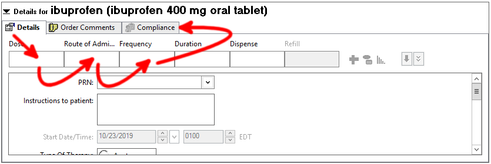
Set the dose, route, frequency. Then select "Compliance"
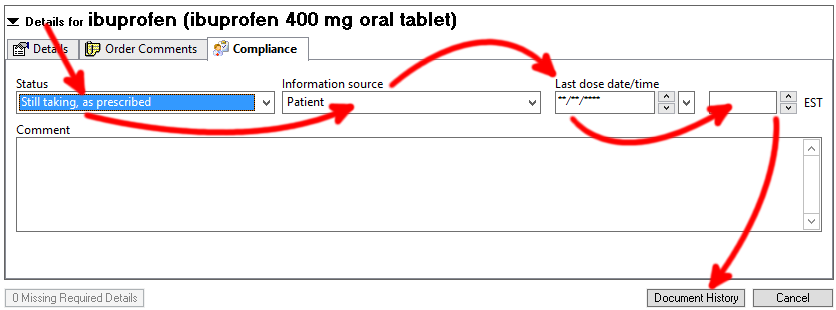
Set the Status, Information source, and the Last dose date/time. Then click "Document History"
Edit Compliance for a Prescribed Medication
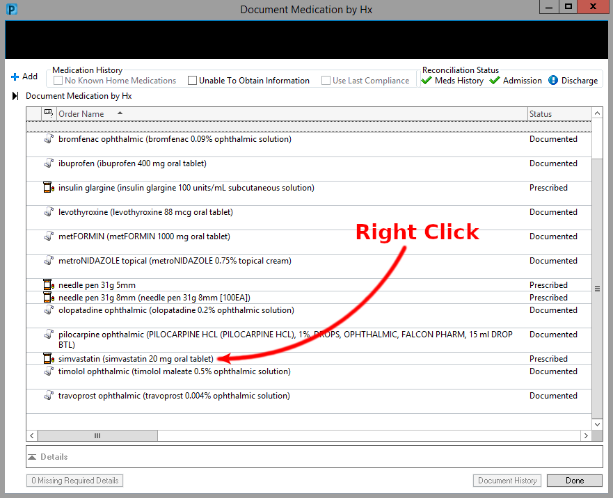
Right click the prescribed medication.
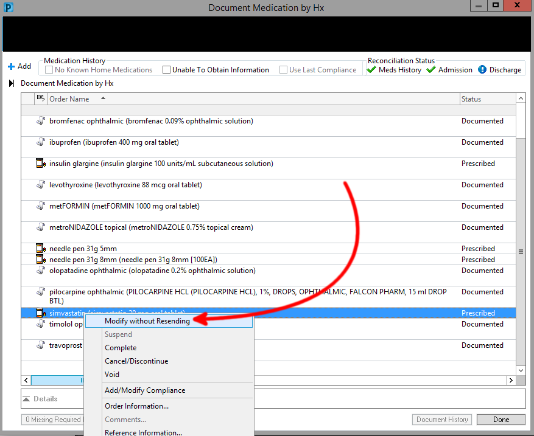
Click "Modify"
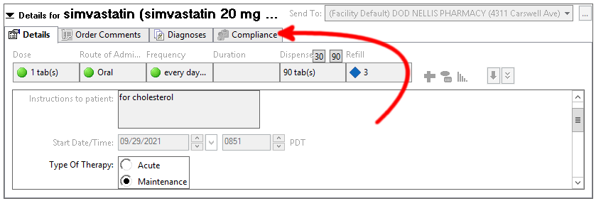
Select "Compliance"
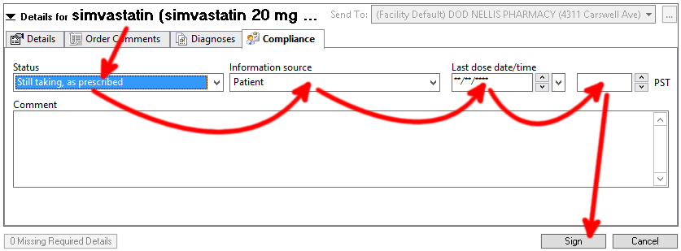
Edit the status, information source, last dose date/time, then sign.